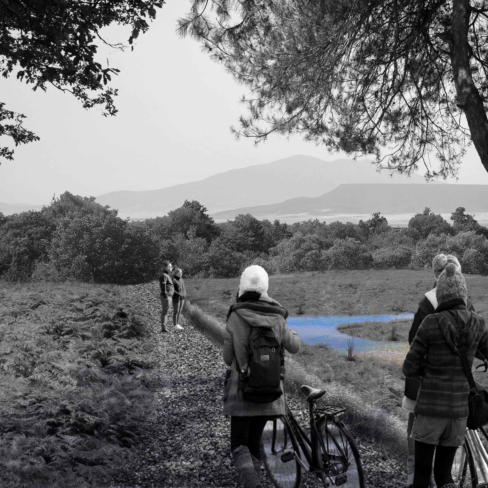
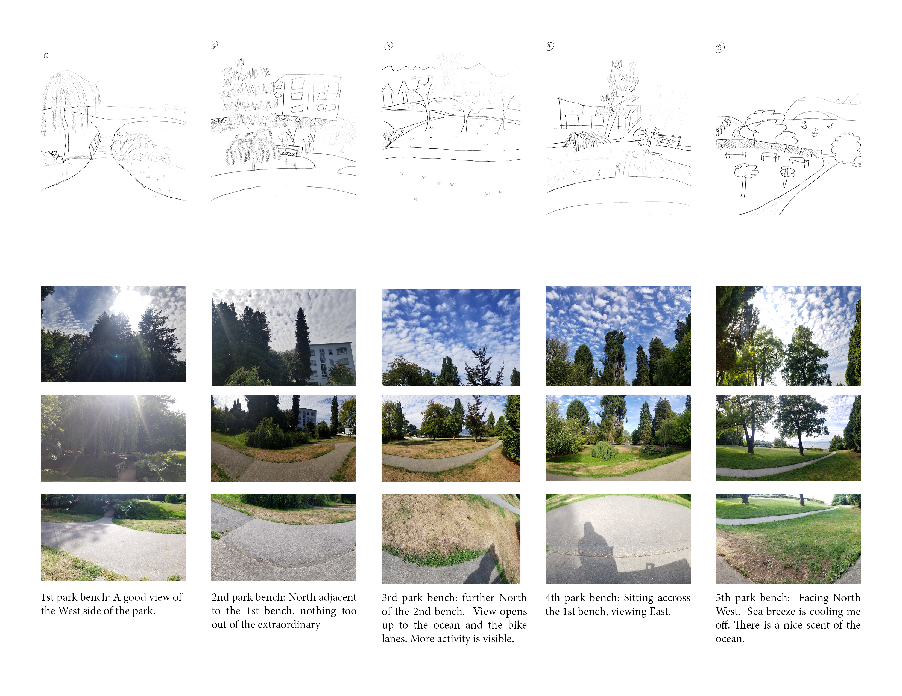
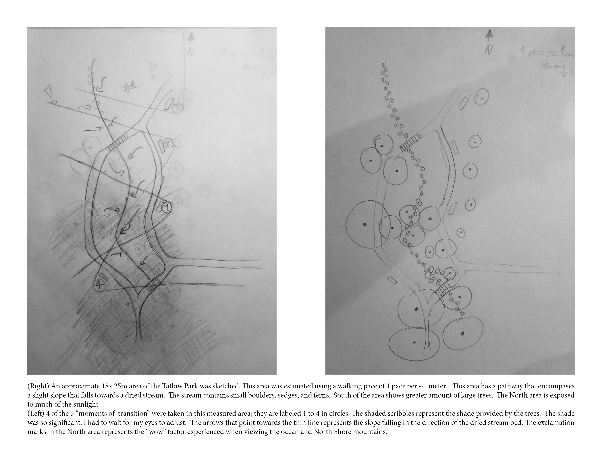
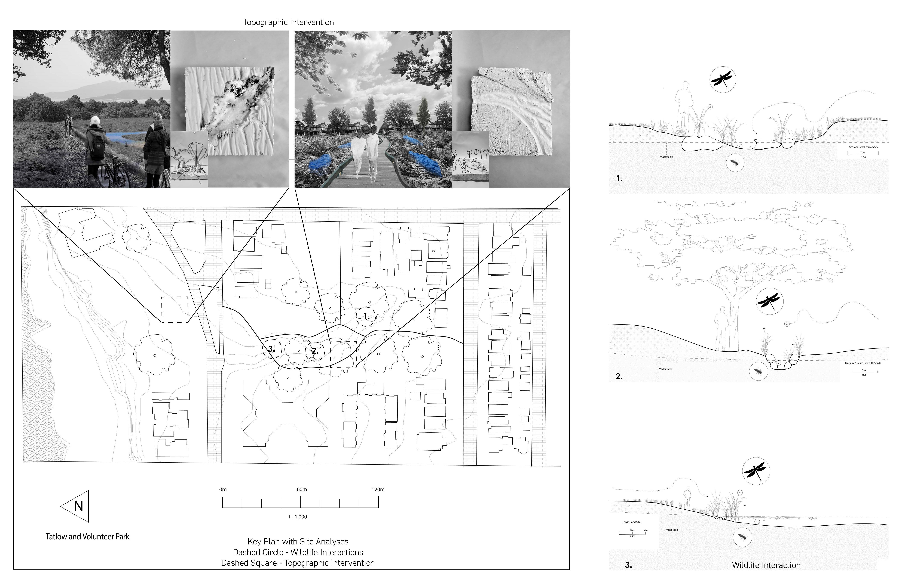

Siting Yourself
Sites in Context
Thickened Sites
Tatlow & Volunteer Park

"Moving in or through a given place, the body imports its own emplaced past into its present experience. Thus our experiences of place – and its social, physical and intangible components – are inextricable from the invocation, creation and reinvestment of memories.""
- Sarah Pink
These parks are located near the waterfront of Kitsilano, on unceded first nation’s territory. It has two parts: a forested area, and an open field. While being immersed in the area, there was a noticeable change of atmosphere depending on where users found themselves in the park. Within the shade of trees and shrubs, users were sitting and idle. Being in the open field and exposed to the sun, were active and moving. I chose the change in atmosphere and to focus on an area where the boundaries of the field and the forest meets. An intervention was designed to complement different type of atmosphere.

 Site Analysis
 Plan Analysis
 Plan and Section of topographic interventions and wildlife interactions